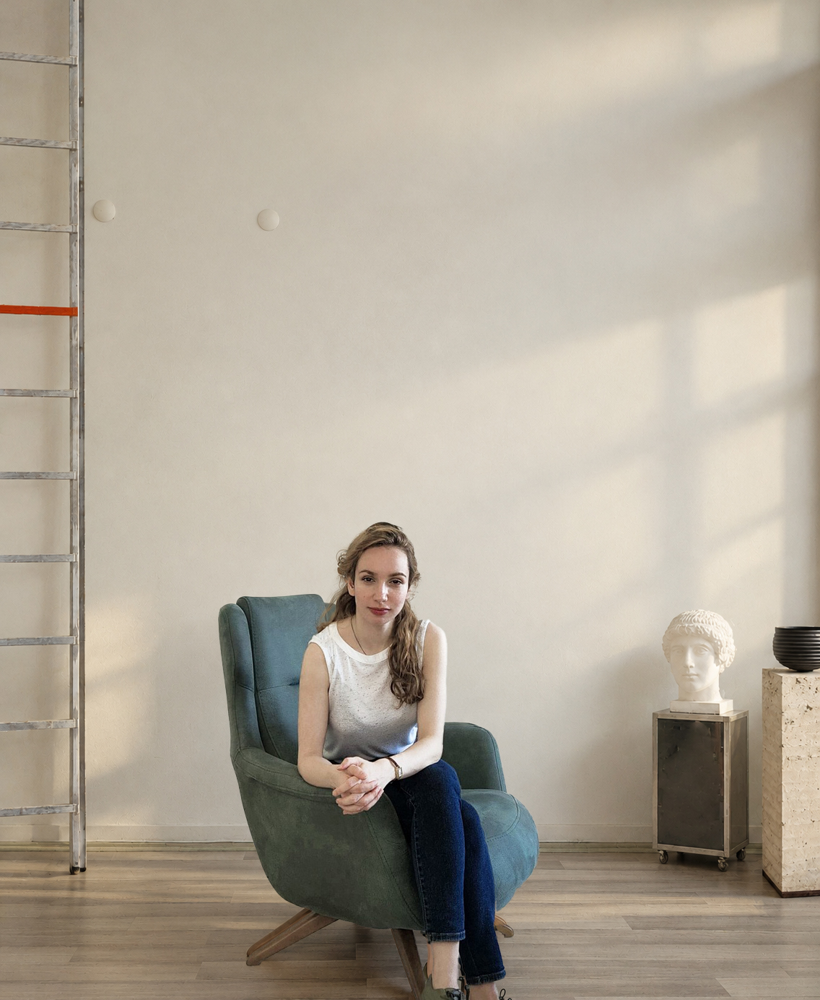

About
Bir düşünce koleksiyonu.
HOO. tek bir biçime, malzemeye ya da anlatıya bağlı kalmaz. Herkesin kendi fikir koleksiyonunu oluşturabileceği kadar esnek; farklı parçaların yan yana gelerek kişisel bir bütün kurabileceği kadar açıktır.
Anlam ararken işlevi unutmayan objeler ve enstalasyonlar üzerine düşünür. Gündelik olanı, malzemeyi, yüzeyi ve mekânı yeniden ele alır; kimi zaman işlevi olan, kimi zaman yalnızca bir düşünceyi görünür kılan parçalara dönüştürür.

SEREN ÖZBAYRAKTAR AYDOĞAN
Founder / Designer
HOO., İç Mimarlık mezunu Seren Özbayraktar Aydoğan tarafından kuruldu. İç mimarlık eğitiminin getirdiği mekân, malzeme ve ölçek yaklaşımını obje tasarımına taşıyan Seren; HOO. çatısı altında obje ile mekân, işlev ile anlatı arasındaki ilişki üzerine çalışıyor.